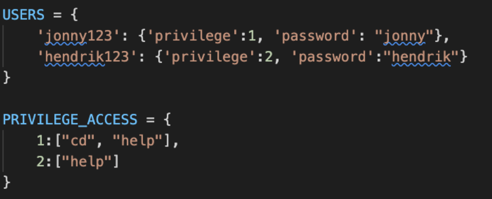
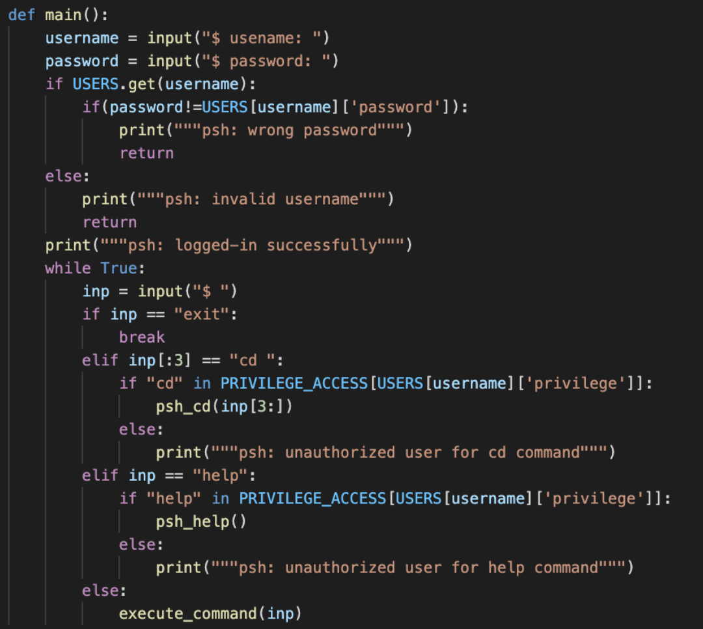

Aenean ornare velit lacus, ac varius enim lorem ullamcorper dolore aliquam.
First, these is no user accounts setting for the shell, eg. require logging in with username and password. Second, there is no privilege setting in the shell. According to the ten principles highlighted by Saltzer and Schroeder (1975) , one of the principles is the least privilege. Least Privilege ensures that any system user runs with the least amount of privilege which is required to perform his/her role. Neither the own shell has the setting of different users, nor does it have permission setting for running various tasks.
One recommendation would be adding the function of logging and monitoring. As the techniques for securing the operating system provided by IBM, an operating system should add with the function of logging and monitoring. Events especially those security related like successful and failed logins, logoffs and changes in user permissions should be logged. The log file should be configured and secured with access permissions, serving as an important monitoring and recovery tool when disaster of the system occurs.
With the vulnerabilities and recommendation about the security of the shell mentioned above, I made changes to the code of my own interactive shell referencing the articles written by Praka, D. (2018). I added user accounts and a list of user authorities of command access as two objects:
The logic of logging in and checking user’s authorization before running the command are added based on the objects USERS and PRIVILEGE_ACCESS. The setting command access privilege was referenced to the fail-safe defaults principle (Saltzer and Schroeder, 1975), which base access decisions on permission rather than exclusion.
Reference:
Aenean ornare velit lacus, ac varius enim lorem ullamcorper dolore aliquam.

Aenean ornare velit lacus, ac varius enim lorem ullamcorper dolore aliquam.

Aenean ornare velit lacus, ac varius enim lorem ullamcorper dolore aliquam.
Sed varius enim lorem ullamcorper dolore aliquam aenean ornare velit lacus, ac varius enim lorem ullamcorper dolore. Proin sed aliquam facilisis ante interdum. Sed nulla amet lorem feugiat tempus aliquam.